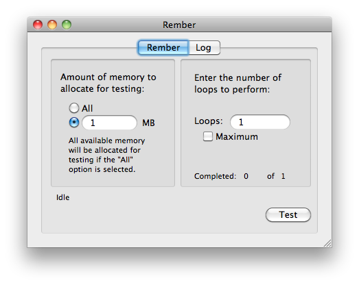
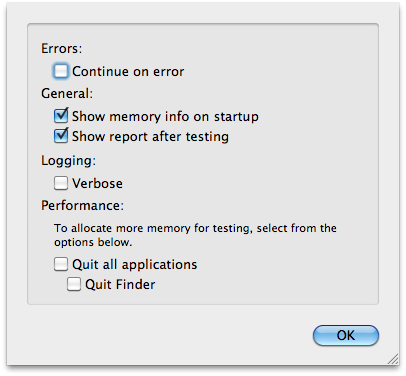

What is Rember?
Rember is a utility that tests RAM (Random Access Memory) modules. Memory chips (aka RAM) can be responsible for unexplainable crashing, freezing, file corruption, and other problems. With the advancement of technology, computer parts (including memory chips) are getting larger, introducing more of a margin for error. Rember will allow users to run tests to verify that installed memory functions normally.
When should I suspect defective memory?
Sometimes, problems with memory can go unnoticed for lengthy amounts of time. Other times, it is just plain difficult to diagnose the problems. When defective RAM is installed, programs will unexpectedly quit, and the computer will kernel panic. Most of the time, this occurs when using many programs at one time. The user doesn't know when crashing will occur, but knows to expect it.
Try the Apple Hardware Test CD or DVD first!
Macintosh computers currently ship with a version of the Apple Hardware Test (AHT), which can perform some fairly heavy duty memory tests on a computer. This should be one of the first lines of defense in diagnosing computer problems. Although the AHT test are thorough, they have not proven to find all defective memory. If these tests do not find the problem, then give Rember a try.
Why is Rember so successful?
Rember uses one of the most precise, and thourough testing software available for Mac OS X. Memtest is a command-line program ported from Linux that has proven its reliability on the x86 side for years. This sofware is also available for Mac OS X. Rember was developed as a front-end, or GUI (Graphical User Interface) for the memtest application, and will allow those less experienced in the command line (or CLI) to use the software.
Using Rember
To run memory test on your Mac, you can simply double-click on the Rember application, select the amount of memory to test and number of loops to run, then click the "Test" button.
| Select the amount of memory to test, either by attempting to get as much as possible, or by testing specific amounts |  | Quit all other applications, including the Finder to free up memory before testing. |
| Specify the number of loops. Infinite loops also available | Verbose logging displays even more information under the "Log" tab. |
There are several options available to the user to increase the functionality of this software. Before testing, the user can quit all applications (including the Finder), as well as turn on a "Verbose" testing mode, to show more information about currently running tests.
|
 |
There are options under the preferences menu, which will allow the user to stop testing, or to continue on error.
|
||
|  | The "Continue on error" preferences lets the user stop testing upon error detection. | |